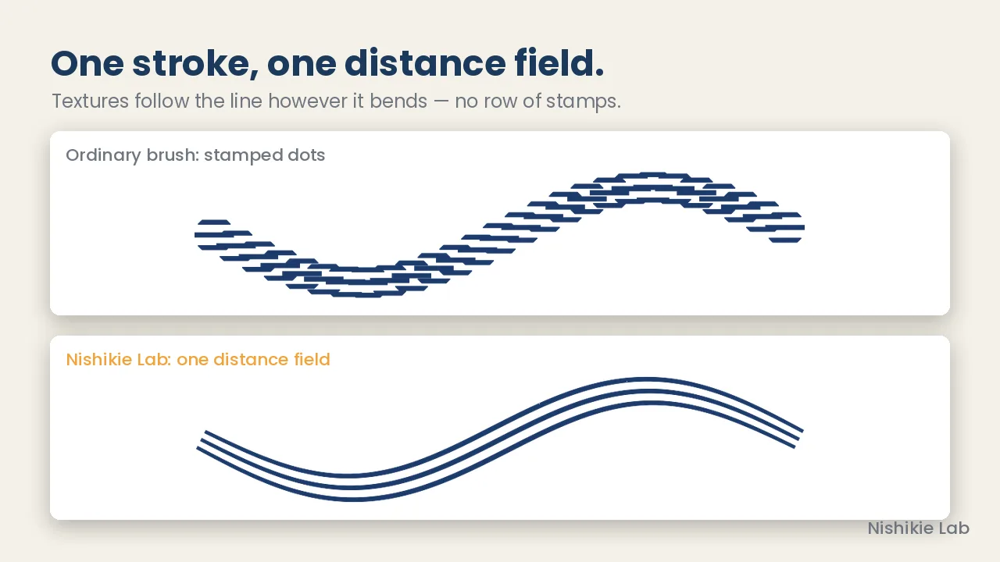
ひと筆＝ひとつの距離場線がどう曲がっても、質感が追いかける。
点を並べるスタンプ式ではなく、ひと筆をまるごと「距離場」として扱います。曲がり角でも継ぎ目が出ず、質感が線に沿って流れます。
入り・抜き、手ブレ補正、混色、かすれ（飛白）にも対応した筆圧ブラシです。
描く道具そのものを作れるペイントソフトです。ブラシの質感も、紙の目も、レイヤーにかかる効果も、すべてGLSLシェーダー。アプリの中で開いて、いじって、自分の道具として保存できます。
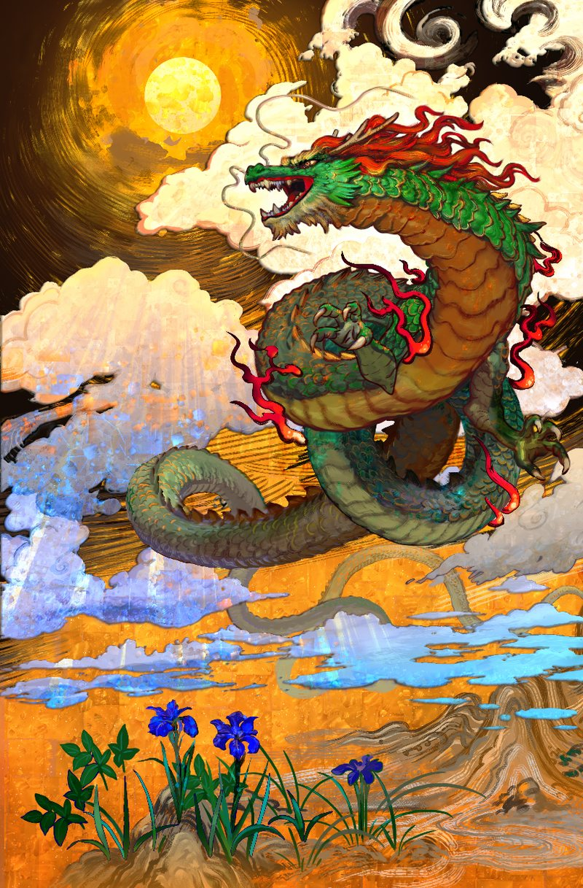
ふつうのペイントソフトは用意されたブラシを選ぶところまで。Nishikie Lab は、その先の「ブラシの中身」まで手が届きます。

点を並べるスタンプ式ではなく、ひと筆をまるごと「距離場」として扱います。曲がり角でも継ぎ目が出ず、質感が線に沿って流れます。
入り・抜き、手ブレ補正、混色、かすれ（飛白）にも対応した筆圧ブラシです。
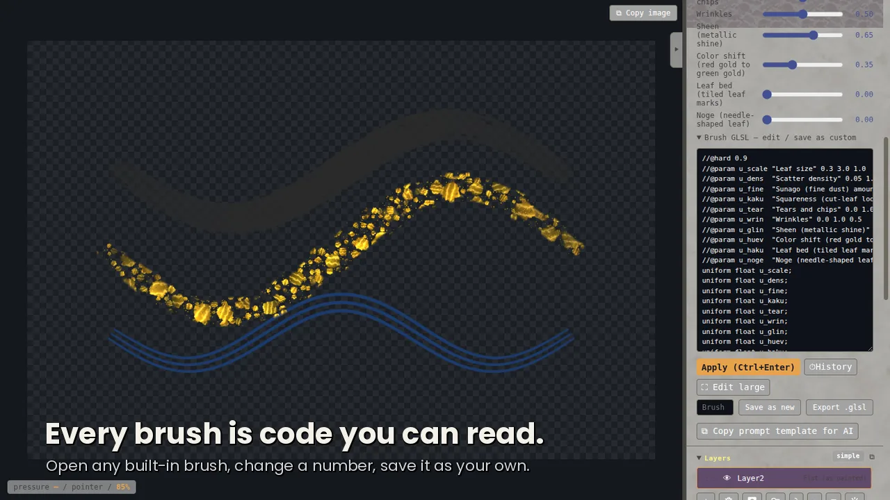
内蔵ブラシはどれもGLSLのコードとして開けます。スライダーでつまみを動かすのも、コードを書き換えるのも自由。気に入ったら自分のブラシとして保存し、ライブサムネイルの「棚」で管理できます。
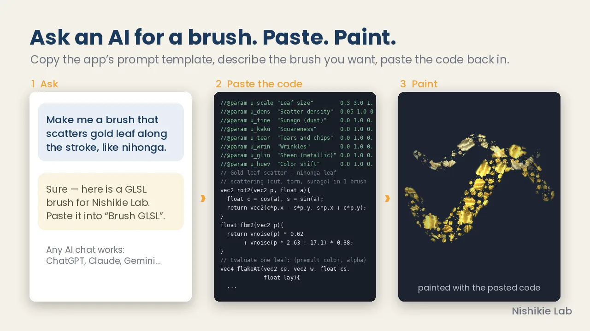
「AIに頼む用のテンプレ」をコピーして、お使いのAIチャットに作りたいブラシを書くだけ。返ってきたコードを貼り付ければ、そのまま動くブラシやマテリアルになります。コードが書けなくても道具を増やせます。
一覧には、それぞれの筆で実際に描いたストロークが並びます。掃き筆（はらい）、飛白（かすれ）、片ボケ、マルチライン、金箔散らし、ハーフトーン……。選んだ瞬間から描き味が変わります。
つまみを調整した状態は「筆名」を付けて保存。お気に入りと棚で整理でき、.nlbrush ファイルに書き出して人に渡せます。ツールの長押しでお気に入りの筆を呼び出せます。
レイヤーをテクスチャスロットへドラッグするだけで、その絵が筆のテクスチャになります。リボンは線に沿ってつなげて流し、スタンプは点々と押し、テクスチャを敷くは面に柄を敷きつめます。
角度・範囲・折り返し・端の形まで調整できるので、レース、鎖、花飾り、模様の縁取りが一筆で描けます。
線画（ベクター）レイヤーは、フォルダごとゆがみツールをかけると、塗りと一緒に変形します。変形したあとも線のデータは残っているので、そのまま点を動かして直せます。
線の太さや筆の形も、描いたあとから差し替えられます。顔の向きを少し変えたい、髪の流れを整えたい、そんなときも線を引き直さずに済みます。
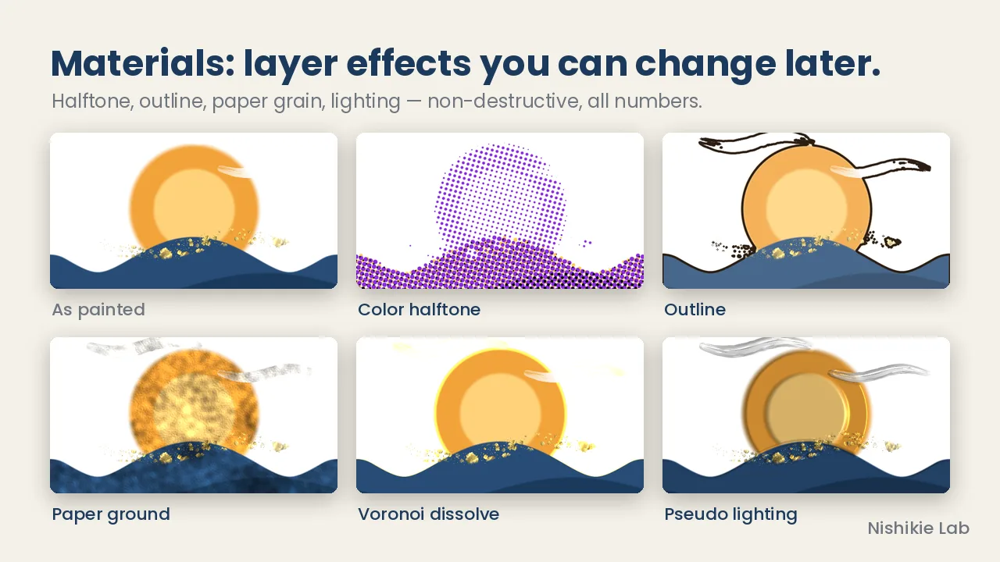
ハーフトーン、輪郭線、紙の地、ボロノイ、疑似ライティング……。レイヤーの見た目をシェーダーで丸ごと差し替えます。非破壊なので、描いたあとでも数値ひとつで調整できます。
筆で下の色を拾いながら伸ばす「混色」は、方式を選べます。デジタルはRGBを混ぜる光の混色。絵の具は顔料の反射スペクトルで混ぜる（Kubelka–Munk）ので、黄＋青は緑、赤＋青は紫になり、混ぜても濁りにくい。
どのブラシでも使えて、下のレイヤーの色を拾う設定もあります。
レイヤーに深度を持たせて、立体的なライティングをかけられます。光の向きを動かすと、盛り上がった絵の具のように陰影が変わります。
深度は絵の明るさから作るほか、筆で直接描き足すこともできます。できた凹凸は法線マップとしてレイヤーに焼き出せるので、3Dのテクスチャ作りにも。ライトツールで光の向きと傾きを、置いたあとから動かせます。
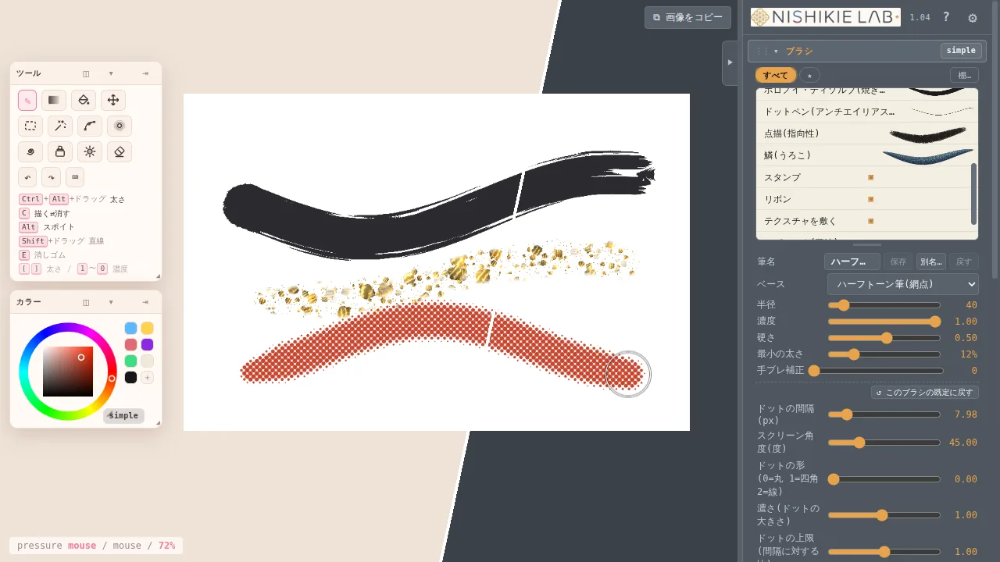
標準は和紙にほんのり桜色の「桜和紙」。落ち着いた「ダーク」「ライト」、和紙と和柄をシェーダーで描く「錦」も選べます。アクセントの色や見出しの色は個別に変えられ、UIの下地そのものをGLSLで自作することもできます。
アップデートで入った機能から。画面に入ると再生されます。
Nishikie Lab は毎日のように手を入れています。次に届けたいものを、作業台の上から少しだけ。
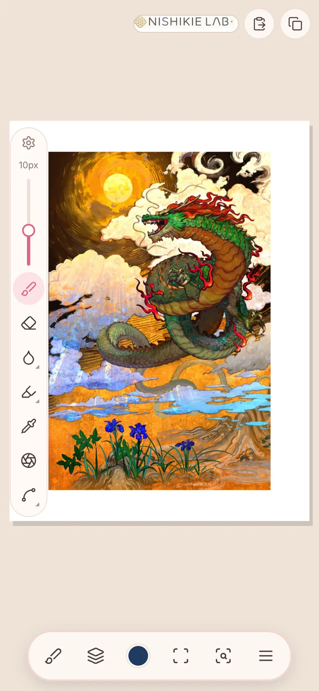
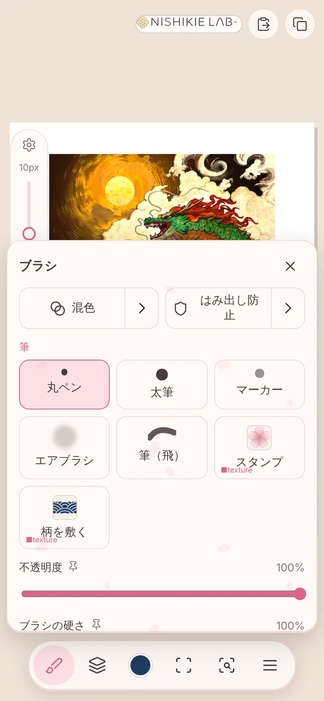
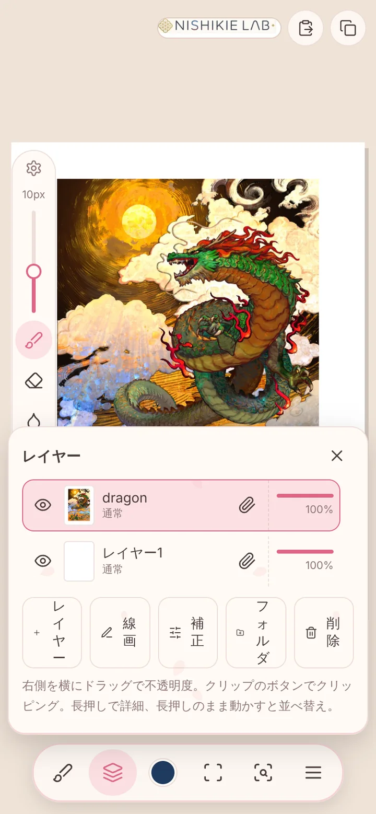
同じエンジン、同じ筆を、指とペンで使えるように組み直しています。片手で届く位置に道具をまとめ、ドックは画面のどの端へも動かせます。パソコン版で作った筆やマテリアルをそのまま持ち込めることを目標にしています。
紙の上の水と絵の具の動きを計算する水彩の筆。1.06 から使えます（まだ育てている途中です）。たっぷり置いた色はギザギザの縁で広がり、隣の色と濁らずに混ざり、乾くと縁が濃く残ります。濡れているうちに水を落とせば白く押し出され、息を吹けば筋になって散ります。
描いたところは乾けばふつうのレイヤーの絵になるので、ほかの筆やマテリアルとそのまま組み合わせられます。
開発中のため、画面・機能・時期は変わることがあります。続報は X の @nao3art で。
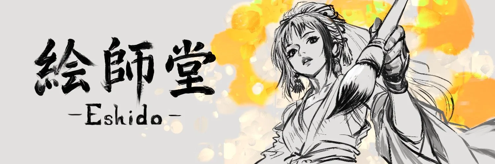
Nishikie Lab は、絵師堂（Eshido）の NAO が自分の絵のために作り続けているソフトです。使う人から届いた声は、作者が直接読んで次の版に入れています。作品を投稿するときは #NishikieLab を付けてもらえたら見に行きます。
買う前に、お使いのパソコンで動くかをその場で確かめられます。
| OS | Windows／macOS／Linux |
|---|---|
| ブラウザ | WebGL2 に対応した最近の Chrome／Edge／Firefox／Safari（Chrome・Edge 推奨） |
| GPU | グラフィックボード不要。2012年以降のCPU内蔵GPU（Intel HD 4000、AMD APU、Apple Mシリーズなど）で動作 |
| メモリ | レイヤー1枚＝幅×高さ×8バイト（4000×4000で約128MB）。大きなキャンバスを多層で使うなら16GB以上が安心 |
| 通信 | 標準の状態では一切なし。描いたものは外へ送られません |
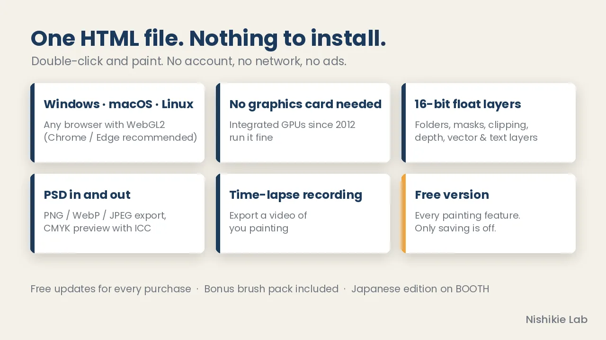
まず無料版で描き味を試して、気に入ったら製品版へ。
不要です。同梱のHTMLファイル1個をダブルクリックすると、ブラウザで開いてすぐ描き始められます。タブやアドレスバーの無い「アプリの窓」で開くランチャーも同梱しています。
描く機能は同じです。無料版はプロジェクト保存・PNG/PSD書き出し・自動バックアップができません。描いた絵は「画像をコピー」でSNSなどに貼り付けられます。
不要です。2012年以降のCPU内蔵GPUで動きます。WebGL2対応のブラウザが必要です。心配なときは環境チェックで確かめてください。
送られません。標準の状態ではインターネットとの通信を行わず、広告もありません。
できます。作品の権利はすべて描いた人のものです。ソフト本体の再配布・転売はできません。
1.x系のアップデートは、購入済みの方なら追加費用なしで最新ファイルをダウンロードし直せます。
X（旧Twitter）の @nao3art へ、メンションでもDMでもどうぞ。作者が直接読みます。環境チェックの結果を添えてもらえると調査が早く進みます。